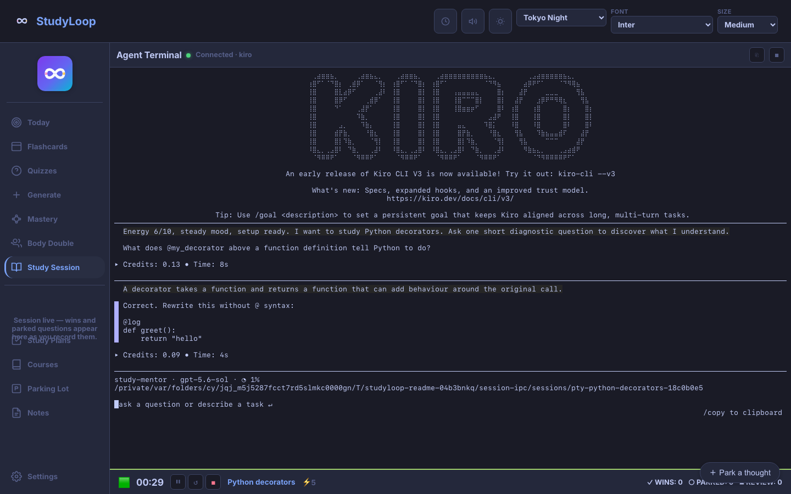

StudyLoop¶
StudyLoop is a local-first study companion for active learning with an AI mentor. It is designed for learners who benefit from one clear focus, short Socratic questions, visible progress, and a dependable way to return after a break.

Start with one useful session¶
- Follow the Setup Guide to install StudyLoop and connect an agent such as Kiro.
- Run
studyloop weband open the address printed in the terminal. - Choose Study Session, enter one topic, set your energy, and start.
If you would rather build a routine gradually, Your First Week adds review, plans, and session history one step at a time.
Choose the support you need¶
| Mode | Useful when | What StudyLoop provides |
|---|---|---|
| Study Session | You want to understand or practise a concept | A live mentor that asks one useful question at a time |
| Body Double | Starting or staying with a task is the hard part | A focused workspace, timer, and quiet agent presence |
| Today | Too many possible next steps are competing | One recommended action based on time, energy, reviews, and recent work |
| Flashcards and quizzes | Something needs retrieval practice | Local review material and spaced-repetition scheduling |
| Study Plans | A larger goal needs shape | A plain-language mission, milestones, and checkpoints |
Designed with AuDHD learners in mind
Energy-aware pacing, tangible closure, a parking lot for tangents, readable themes, and low-shame recovery are part of the workflow rather than optional polish. Read the AuDHD Learning Philosophy for the reasoning behind those choices.
What stays local¶
Your StudyLoop database, study plans, generated material, and optional note exports live on your machine by default. The selected AI agent may use its own provider or local model, so its data handling depends on that agent's setup. StudyLoop does not make a local workflow automatically offline: the Web UI needs the local server, and cloud-backed agents still need their provider.
Current boundaries¶
- Install from a Git checkout on macOS or Linux; there is no current PyPI or Homebrew release.
- Use a laptop or tablet for the Web UI. Phone layouts are not supported.
- Keep
studyloop webrunning while using the browser app; there is no offline service worker. - Create study plans through the current Web UI form or CLI. An agent-led planning interview is not integrated into the Web UI yet.
- Use the CLI for practice-task generation and verification.
See the public roadmap for what is ready, what is being refined, and what is deliberately later.
Find the right guide¶
- Web UI Guide — Study Session, Body Double, review, and LAN access
- Study Plans — shape goals without turning planning into work avoidance
- Content Pipeline — generate cards and practice material from local sources
- Voice Output — server and operating-system speech options
- CLI Reference — every command and option
- Troubleshooting — common installation and runtime problems
- Contributing — help with code, docs, accessibility, or testing